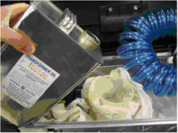

NOTE:
At a minimum, make sure reservoir is 1/2 full prior to starting air removal procedure.
NOTE:
Reservoir volume is approximately 5 liters (1.3 gallons).
Illustration 2:
Fill Reservoir with Transformer Oil
